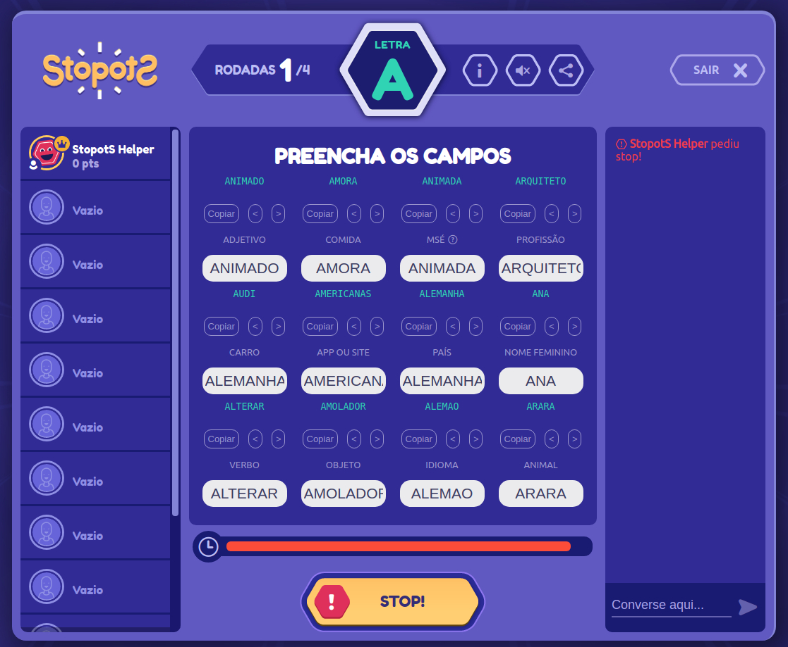

Veja as respostas enquanto joga
As respostas que estão no seu dicinário aparecem acima de cada tópico!
Se existirem mais de uma resposta para cada tópico, a resposta inicial será aleatória e é possivel navegar pelas respostas existentes.
Se existirem mais de uma resposta para cada tópico, a resposta inicial será aleatória e é possivel navegar pelas respostas existentes.
Adicione respostas ao jogar
Gerencie o seu dicionário
Exporte e Importe o seu dicinário
Ative e desative quando quiser
